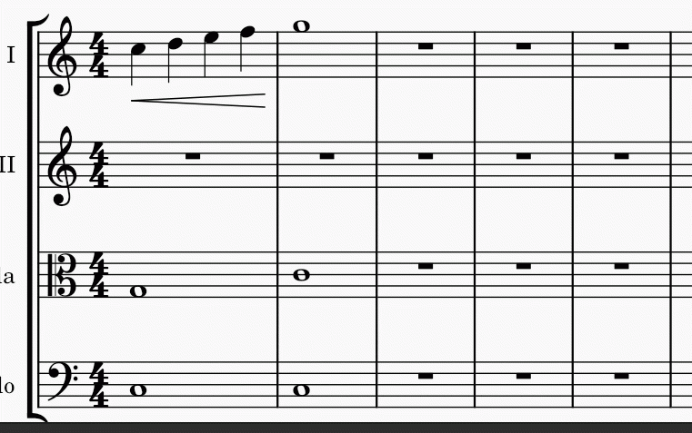

Copy and paste
The cut, copy, and paste commands can be used to reproduce entire passages of music, to move music earlier or later, to copy text or other markings between staves, to exchange the content in different measures, and more.
Accessing the commands
In all cases, the first step is to select what you want to cut or copy.
As with other programs that support cut, copy, and paste, you can access these commands from the Edit menu, from a context menu that appears upon right-click or related gesture (e.g., Ctrl+click, or two-finger tap), or via the standard keyboard shortcuts.
| Command | Shortcut (Windows) | Shortcut (Mac) | Context menu | Main menu |
|---|---|---|---|---|
| Cut | Ctrl+X | Cmd+X | Cut | Edit -> Cut |
| Copy | Ctrl+C | Cmd+C | Copy | Edit -> Copy |
| Paste | Ctrl+V | Cmd+V | Paste | Edit -> Paste |
| Swap with clipboard | Ctrl+Shift+X | Cmd+Shift+X | Swap with Clipboard | Edit -> Swap with clipboard |
| Paste half duration | Ctrl+Shift+Q | Ctrl+Shift+Q (as of 4.2) | N/A | Edit -> Paste half duration |
| Paste double duration | Ctrl+Shift+W | Ctrl+Shift+W (as of 4.2) | N/A | Edit -> Paste double duration |
Note: When using the context menu, take care to always right-click on a selected item; if you right-click on an empty space by mistake your selection will be lost!
Copying a range selection
To copy a range\—whether a single chord, a single measure, several measures on one staff, or multiple measures across multiple staves—do the following:
- Select the range you want to copy
- Use the Copy command from the menu or press Ctrl+C (Mac: Cmd+C)
- Select the first note or rest of the destination
- Use the Paste command from the menu or press Ctrl+V (Mac: Cmd+V)

Copied music will replace the existing content of the destination. All elements in the selected range will be copied, with the exception of system-wide elements such as tempo text, key and time signature changes, and repeats. You can use the Selection Filter to exclude other elements of a given type from the operation.
Copying a single element or a list selection
MuseScore also allows copying a single element, or a list selection of multiple lyrics, chord symbols, dynamics, articulation, or other markings from one place to another, while keeping the content such as notes in the destination intact. Multiple notes list selection cannot be copied.
MuseScore preserves the relative time positions of the markings based on literal note value distance if possible, measure rhythm is not taken into account. This includes case of copying chord symbols and dynamics. Valid note or rest anchors are required at the destination music when pasting lyrics and articulations.
- Select the elements you want to copy
- Use the Copy command from the menu or press Ctrl+C (Mac: Cmd+C)
- Select the first note or rest of the destination
- Use the Paste command from the menu or press Ctrl+V (Mac: Cmd+V)
Moving elements
Cut and paste commands can be used to
- move a passage to another staff, such as music on flute to clarinet, or
- shift a passage earlier or later. This method is especially useful as a way to insert or delete a note or rest and also shifts existing notes and rests to create or trim silence.
Measures (their rhythmic structure) cannot be moved, but see Adding and removing measures and Time signatures chapters. When moving list selection, its elements' relative positions are preserved if possible, see "Copying a list selection" section.
To move a selection:
- Select what you want to move
- Use the Cut command from the menu or press Ctrl+X (Mac: Cmd+X)
- Select the first note or rest of the destination
- Use the Paste command from the menu or press Ctrl+V (Mac: Cmd+V)
Swapping a selection with the clipboard
The swap with clipboard command combines two operations into one: (1) First it overwrites a selected part of the score with the contents of the clipboard, just like the paste command; (2) Second, it transfers the overwritten part of the score back to the clipboard, just like the copy command.
It can be used, for example, to swap two equal-length sections of a score, A and B:
- Select section A
- Apply the cut command
- Select section B
- Apply the swap with clipboard command to paste A over the contents of B while moving the contents of B to the clipboard
- Select section A again (or just the first note, rest, or measure)
- Apply the paste command
Like the other commands discussed here, you can access the swap with clipboard command from the menu or via a keyboard shortcut—in this case, it is Ctrl+Shift+X (Mac: Cmd+Shift+X).
Repeating a selection
A common use for copy and paste is to duplicate a given passage (including notes, chords etc) immediately after the original. Use the special repeat selection command to simplify this process.
- Select a single element or range to be repeated
- Press R
This does not work on list selection. It works on a single chord, either on a range selection of it, and when exactly one note of that chord is selected. See Selecting elements chapter. In note input mode, this command repeats the entire chord that contains the current note. This is useful for creating a series of repeated chords.
Copying a range selection to multiple staves
If you wish to copy a passage to multiple staves—for instance, to double music of flute with oboes and clarinets—you can use the explode command:
- Select the passage you wish to copy
- Extend the selection to include the staves below (e.g., by pressing Shift+Down)
- Use Tools→Explode
This copies the original selection, assuming it contains only single notes—no chords and no multiple voices. If there are chords or multiple voices, then these are distributed among the remaining staves as described in the section on the explode command.
Paste half/double duration
If you have entered a passage using mostly eighth notes but wish to halve the entire passage to using mostly sixteenth notes, or double it to quarter notes, MuseScore provides a pair of special commands to accomplish this. You can either modify the durations of a selection in place or create a separate copy of the passage with the modified durations. To halve or double the duration of a passage:
- Select a range to modify
- Use the copy command
- If you wish to create a separate copy of the passage with the modified durations, select the destination
- Use the paste half duration or paste double duration command Ctrl+Shift+Q/W
Duplicating individual elements
Individual elements—even those that are not selected automatically in a range selection, like time signatures or voltas—can be selected and then duplicated using the mouse.
- While pressing Ctrl+Shift (Mac: Cmd+Shift), and click and hold on an element
- Drag it anywhere in the score
- When you release the mouse button, the selected element is copied to the new location